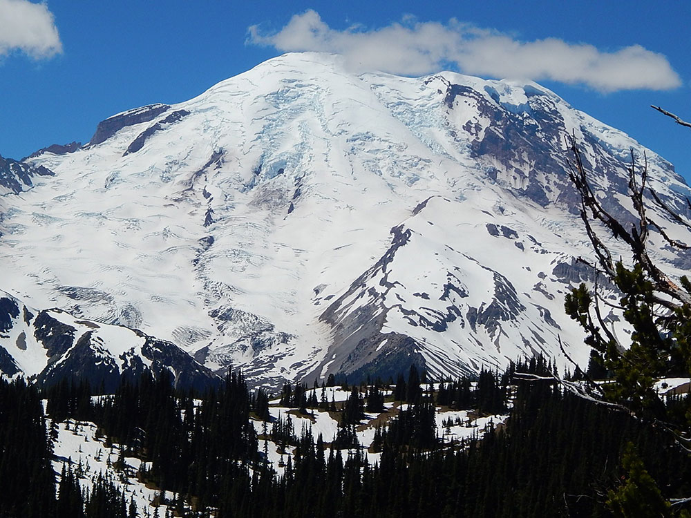
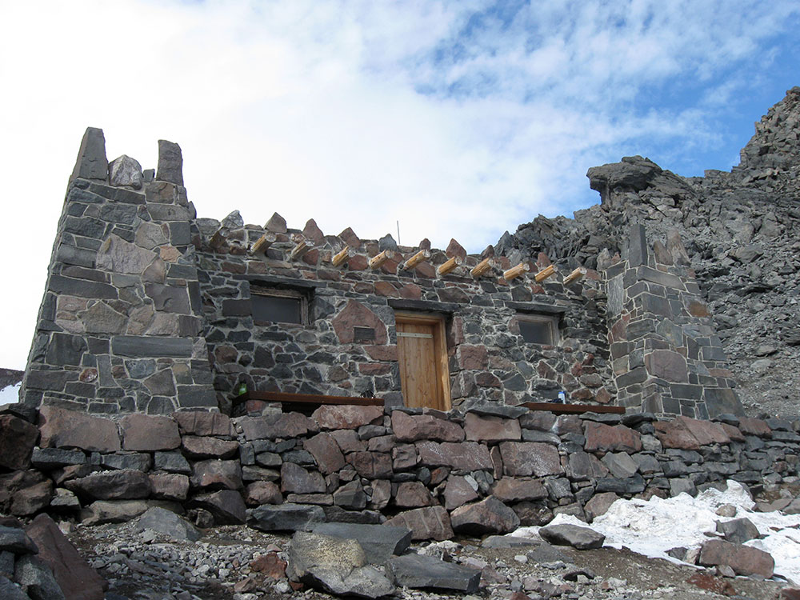

Massive glacier-covered stratovolcano rising above surrounding forests and valleys, forming the highest peak in Washington and one of the most prominent mountains in North America.
General Information
Private Vehicle: $30 (7-day pass)
Motorcycle: $25 (7-day pass)
Individual (walk-in/bicycle): $15 (7-day pass)
Additional climbing permits may be required for summit attempts
How to Get There
From Ashford (15 mi): Follow WA-706 east through the Nisqually Entrance and continue toward Paradise, where numerous viewpoints and trail systems provide access to views and routes on the mountain.
Overview
Mount Rainier also known as Tahoma or Tacoma, is a large active stratovolcano in the Cascade Range of the Pacific Northwest, located in Mount Rainier National Park about 59 miles (95 km) south-southeast of Seattle. With a summit elevation of 14,411 ft (4,392 m), it is the highest mountain in the U.S. state of Washington and the Cascade Range, the most topographically prominent mountain in the contiguous United States, and the tallest in the Cascade Volcanic Arc.
Name
Mount Rainier was first known by the local Salishan speakers as Talol, Tacoma, or Tahoma. One hypothesis of the word origin is 'mother of waters' in the Lushootseed language spoken by the Puyallup people. The linguist William Bright gives the origin as Salish pronunciation: 'snow-covered mountain'. Another hypothesis is that Tacoma means "larger than Mount Baker" in Lushootseed: Ta 'larger', plus Koma (Kulshan), (Mount Baker). Other names originally used include Tahoma, Tacobeh, and Pooskaus.
John Muir
John Muir climbed Mount Rainier in 1888, and although he enjoyed the view, he conceded that it was best appreciated from below. Muir was one of many who advocated protecting the mountain. In 1893, the area was set aside as part of the Pacific Forest Reserve in order to protect its physical and economic resources, primarily timber and watersheds.
Climbing
Mountain climbing on Mount Rainier is difficult, involving traversing the largest glaciers in the U.S. south of Alaska. Most climbers require two to three days to reach the summit, with a success rate of approximately 50%, with weather and physical conditioning of the climbers being the most common reasons for failure. About 8,000 to 13,000 people attempt the climb each year, about 90% via routes from Camp Muir on the southeast flank, and most of the rest ascend Emmons Glacier via Camp Schurman on the northeast. Climbing teams require experience in glacier travel, self-rescue, and wilderness travel. All climbers who plan to climb above the high camps, Camp Muir and Camp Schurman, are required to purchase a Mount Rainier Climbing Pass and register for their climb. Additionally, solo climbers must fill out a solo climbing request form and receive written permission from the Superintendent before attempting to climb.
Climbing routes
All climbing routes on Mount Rainier require climbers to possess some level of technical climbing skill. This includes ascending and descending the mountain with the use of technical climbing equipment such as crampons, ice axes, harnesses, and ropes. Difficulty and technical challenge of climbing Mount Rainier can vary widely between climbing routes. Routes are graded in NCCS Alpine Climbing format.
The normal route to the summit of Mount Rainier is the Disappointment Cleaver Route, YDS grade II-III. As climbers on this route have access to the permanently established Camp Muir, it sees the significant majority of climbing traffic on the mountain. This route is also the most common commercially guided route. The term "cleaver" is used in the context of a rock ridge that separates two glaciers. The reason for naming this cleaver a "disappointment" is unrecorded, but it is thought to be due to climbers reaching it only to recognize their inability to reach the summit. An alternative route to the Disappointment Cleaver is the Ingraham Glacier Direct Route, grade II, and is often used when the Disappointment Cleaver route cannot be climbed due to poor route conditions.
The Emmons Glacier Route, grade II, is an alternative to the Disappointment Cleaver route and poses a lower technical challenge to climbers. The climbers on the route can make use of Camp Schurman (9,500 ft), a glacial camp site. Camp Schurman is equipped with a solar toilet and a ranger hut.
The Liberty Ridge Route, grade IV, is a considerably more challenging and objectively dangerous route than the normal route to the summit. It runs up the center of the North Face of Mount Rainier and crosses the very active Carbon Glacier. First climbed by Ome Daiber, Arnie Campbell and Jim Burrow in 1935, it is listed as one of the Fifty Classic Climbs of North America by Steve Roper and Allen Steck. This route only accounts for approximately 2% of climbers on the mountain, but approximately 25% of its deaths.
Overview
Mount Rainier is the tallest mountain in Washington and the most heavily glaciated peak in the contiguous United States. Rising to 14,411 feet (4,392 meters), the massive volcano dominates the landscape of Mount Rainier National Park and is widely regarded as one of the premier mountaineering objectives in North America. Its extensive glacier system, alpine scenery, and challenging summit climb attract thousands of climbers each year.
While Mount Rainier is often considered a natural progression for aspiring mountaineers after peaks such as Mount Hood, it is substantially more demanding. Climbers must travel across glaciers, navigate crevasses, manage altitude, and endure long summit days. Most summit attempts follow the Disappointment Cleaver Route, which is the standard route used by the major guide services and is considered the most accessible path to the summit.
Summit Route Options
| Route | Difficulty | Overview |
|---|---|---|
| Disappointment Cleaver (DC) | Moderate to Strenuous | The most popular route and the standard guided climbing route, utilizing Camp Muir and the Ingraham Glacier. |
| Ingraham Direct | Moderate to Advanced | A more direct variation used in certain snow conditions before crevasses open later in the season. |
| Emmons Glacier Route | Moderate to Advanced | The longest glacier route on the mountain with a less crowded eastern approach. |
| Kautz Glacier Route | Advanced | A more technical climb involving steeper snow and ice sections. |
| Liberty Ridge | Expert | One of North America's classic alpine routes, requiring advanced glacier and ice climbing skills. |
Typical Disappointment Cleaver Summit Climb
- Starting Point: Paradise Visitor Area (approximately 5,400 feet).
- Summit Elevation: 14,411 feet.
- Elevation Gain: Approximately 9,000 feet.
- Duration: Typically 3 to 4 days on guided expeditions.
- Camp Locations: Camp Muir (10,080 feet) and often Ingraham Flats (approximately 11,000 feet).
- Terrain: Snowfields, glaciers, crevasse crossings, volcanic ridges, and high-altitude alpine terrain.
- Equipment: Mountaineering boots, crampons, ice axe, helmet, harness, and glacier travel equipment.
Most guided climbs include glacier travel instruction, crampon techniques, self-arrest practice, rope travel training, and acclimatization before the summit push. Summit day commonly begins during the middle of the night to take advantage of firmer snow and safer glacier conditions.
Guided Summit Climb Options
| Experience | Typical Price | Overview |
|---|---|---|
| 3-Day Guided Summit Climb | Approximately $1,700-$2,300 | Most popular itinerary combining training, glacier travel instruction, and summit attempt. |
| 3.5-Day Guided Summit Climb | Approximately $2,000-$2,800 | Includes additional acclimatization, skills training, and higher camps. |
| Mountaineering Course + Summit Climb | Approximately $2,500-$4,000+ | Comprehensive instruction designed for newer mountaineers. |
| Private Guided Climb | Approximately $4,000-$8,000+ | Customized instruction with lower guide-to-client ratios. |
The average cost for a guided Mount Rainier summit expedition is approximately $2,300-$2,700 per person, depending on itinerary length, guide ratio, included logistics, and training components.
Major Challenges and Hazards
- Glacier Travel involving crevasses, snow bridges, and rope-team movement.
- Altitude due to the summit elevation exceeding 14,000 feet.
- Extreme Weather including storms, high winds, and whiteout conditions.
- Rockfall and Icefall in certain areas of the route.
- Long Summit Days often requiring 10-15 hours of climbing and descent.
- Rapid Route Changes caused by shifting glacier conditions throughout the season.
Best Time to Climb
| Season | Conditions |
|---|---|
| May - June | Prime climbing season with good snow coverage and established routes. |
| July - Early August | Peak guided climbing season with generally favorable weather. |
| Late August - September | Increasing crevasse exposure and more variable route conditions. |
| Winter | Highly technical conditions requiring extensive alpine experience. |
Recommended for First-Time High-Altitude Mountaineers
Mount Rainier is frequently regarded as one of the best training mountains for larger objectives such as Denali, Aconcagua, and Himalayan expeditions. However, it is significantly more demanding than Mount Hood and should not be considered a beginner hike. Most first-time climbers choose a guided expedition that includes glacier travel instruction, crevasse safety, and mountaineering skills training before attempting the summit.
Information in this article is based on guided climb descriptions, route information, and expedition details published by International Mountain Guides, Alpine Ascents International, and route resources from The Mountaineers describing the Disappointment Cleaver route, Camp Muir, glacier travel, and summit itineraries.
This article uses material from the Wikipedia article "Mount Rainier", which is released under the Creative Commons Attribution-Share-Alike License 3.0


